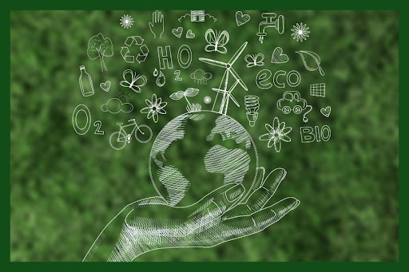
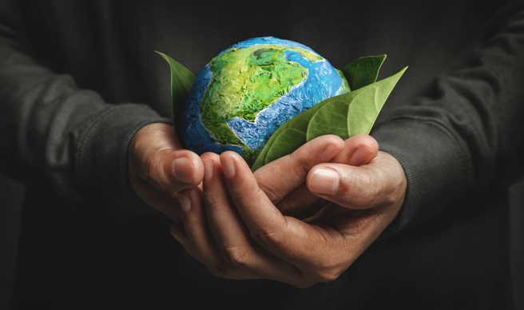
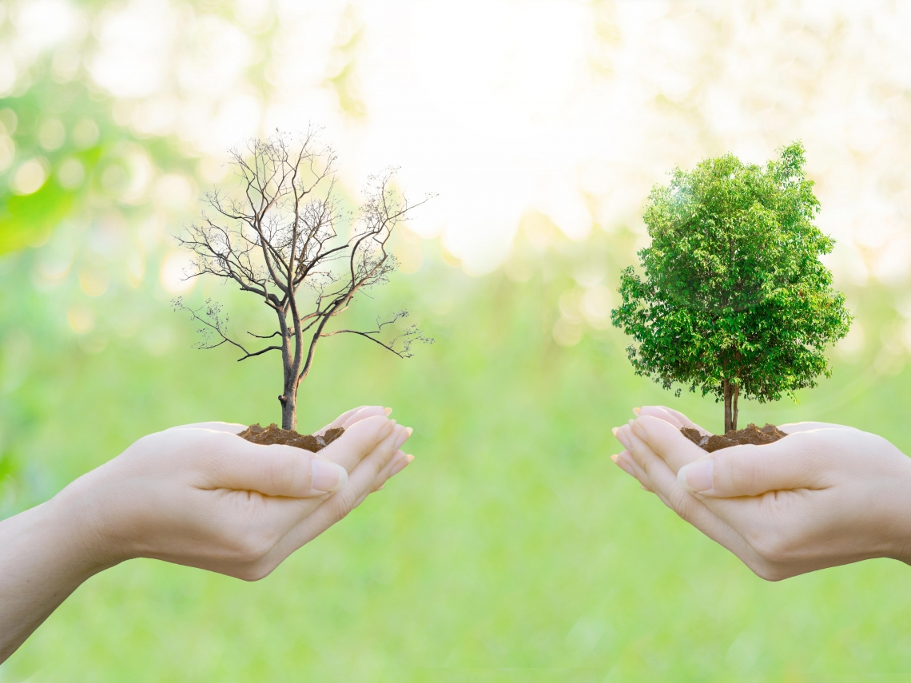

綠色環保構想-永續綠藍圖
以手繪風格呈現多元環保元素，包含再生能源、資源回收與低碳生活，象徵人類對地球生態的全面守護與美好構想。

守護地球家園-掌心的星球
雙手細心呵護著點綴綠葉的地球模型，傳遞出地球的脆弱與珍貴，強調每個人都肩負著保護自然環境的使命。

生態修復對比-選擇綠未來
透過枯樹與茂盛綠樹的強烈對比，展現出人類行為對環境帶來的不同結果，呼籲大眾以行動投入森林復育與保育。
綠色減塑生活-環保愛循環
結合回收標誌與日常環保容器（如玻璃瓶、紙杯），提倡從生活中減少一次性廢棄物，落實循環經濟的綠色生活態度。